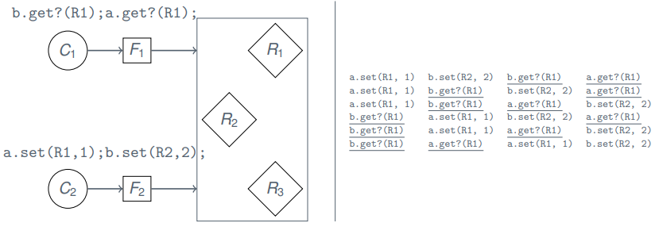

Replication and Consistency¶
Goals of Replication¶
Fault Tolerance
- Transparent to user
- Tolerates node/network failures
High availability
- Service is rarely interrupted
Performance
- Limits of horizontal scaling
- Overcome geographic/network limits
Tolerance and Availability¶

Performance¶
- Edge servers around the internet
Caching¶
Caching is also replication
- Local browser cache
- Prefetching for Netflix
- fault tolerance
- if you loose network for a second, the video keeps playing
- fault tolerance
- DNS registry
Problems¶
- Consensus
- ... or consistency
- Overhead in communication
- Failure detection and handling
CAP Theorem¶
It is impossible for a distributed computer system to simultaneously provide Consistency, Availability and Partition Tolerance.
A distributed system can satisfy any two of these guarantees at the same time but not all three.
The Choice¶

But: If we relax our requirements we can overcome this impossibility
Examples¶
CP Systems
- Financial sector
- Simulation (weather forecast)
- CERN
AP Systems
- Social Networks
- Streaming services
- Search Engines
- Emails
CA Systems
- Single server systems
- Stable Elixir setups
Application Dictates
Core/critical services are often CP
Assumptions¶
- Async systems
- Reliable communication
- Crash-fail
- Atomic operation
- Objects are "state machines"
- no random
- no timer
- no external events
Notation
o.m(v) apply modifier m to object o with value v
myAccount.deposit(1000)

Requirements¶
- Transparent for user
- Consistent in replicated objects
Ideal
Indistinguishable from single copy behavior
Operations¶
Generalized workflow
- Request
- Coordination
- Execution
- Agreement
- Response


Interesting when we have multiple requests at the same time
Fault Tolerance¶
Goal
- f-resilient replication
- No downtime
- Transparent to clients
Notice
Transparent to clients is not yet formally defined
Consistency Models¶
Strong consistency
- In real-time, after update A, everybody will see the modification done by A when reading
Weak Consistency
- What is the ordering, disregarding real-time?
- "reasonably consistent"
Inconsistency¶

Desired Temporal Consistencies¶
- If I write a value, I will see that (or a newer value) on a subsequent read
- If I read twice, the value returned on the second read is at least as new as from the first read
- If data is related (questions and answers), I expect this to be reflected in a consistent manner
- ... no constraints on unrelated data!
Linearizability (Lamport)¶
\bold {C_i} operations
- o_1^i, o_2^i, \dots, o_n^i for some operation o \in O
Timestamp
- Let T(o^i_n) be the timestamp of o^i_n.
Linearizability
- An interleaving \dots, o^i_5, o^j_{100}, o^i_6, \dots (with i \neq j) is linearizable if
- arrive at a (single) correct copy of the object (from specification)
- the order is consistent with real time
- T(o^i_5) \leq T(o^j_{100}) \leq T(o^i_6)
Problems¶
Implementation
- Sync hardware clock on multiple machines
- Guess maximal network delay D
- keep operation in hold-back queue until age D
- keep hold-back queue sorted
Drawbacks
- No accurate clock synchronization algorithm
- Reasonably accurate versions exists (depends on D)
- No hard deadline in async setting
Interleavings¶

Sequential Consistency (Lamport)¶
\bold {C_i} operations
- o_1^i, o_2^i, \dots , o_n^i for some operation o \in O
Sequential Consistency
- An interleaving \dots, o^i_a, o^j_b, o^i_c, \dots (with i \neq j) is sequentially consistent if
- arrive at a (single) correct copy of the object (from specification)
- the order respects casuality of C_i
- a < c, i.e. from C_i, o^i_a was sent before o^i_c
Example on slides 23
Replication Architectures for Fault Tolerance¶
Read-only replication
- Immutable files
- Cache-servers
Passive replication (primary/secondary)
- High consistency
- Banks?
Active replication
- Fast failover mechanism
- Everyone can take over if one fails
- Workload distribution
- Everybody is working on equal terms
Passive Replication¶

- "just follow primary"
- Up to n-1 crashes
- No byzantine failures
- Linearizable (with regards to clock of primary)
- Large overhead of failure
- why?
Note
Sacrifice linearizability => offload reads to backups!
Active Replication¶
- Sequentially consistent
- RTO multicast
- impossible in async
- expensive otherwise
- "state-machine" objects required
- Handles byzantine nodes
- assuming signed messages (n/2)-1 failures
- Failover is cheap
- Just exclude failed from group
- "same procedure"
- Read can be trivially distributed
Availability¶
Availability VS Fault Tolerance
- We care less about consistency
- Higher uptime = better
- Faster response times
Example
- Read-only: caches
- Most web-scaled services
- Youtube, Facebook, Stackoverflow
Gossip Architecture¶
Operations
- Read
- no state change
- Write (update)
- can change state of object
Relaxed Consistency
- R's apply operations "eventually" with specific order
- Client may receive outdated data
- though newer than clients current data
Reads
- Casual ordering
Writes
- Choice of clients
- Causal order
- Total + Causal order (relative to relations)
- Immediate ordering
Idea¶
Vector clocks, vector clocks everywhere
Track “number of unique updates R_i has seen of object from some frontend” as a vector.
- Each entry in vector-clock corresponds to R_i
- R_i updates own index in vector on update from some F_i
- Keep messages from future in hold-back queue
- Avoid duplicates
- Frontend keep track of "last known" timestamp
- Frontend label their reads/writes with last-known timestamp
- Receive new timestamp updates from R_i (or via gossip)
Phases¶
- Request: Fs forwards to a single R (or more)
- Coordination: Queue request until order is respected
- Execution: Execute in correct order
- Agreement: we can do one of:
- Wait for gossip
- Request missing data
- Response
- Read: await coordination
- Write: immediately
Frontend View¶
Replication Managers View¶
Details¶
Frequency of gossip
- Minutes, hours or days
- Depend on the requirement of application
- think of git, how often are we committing?
Topology
- Random
- Deterministic: investigate known clocks
- Topological: Mesh, circle, tree
- Geographical
- you gossip to machines geographically close to you
Discussion¶
- Works even with network partition
- but may need conflict resolution
- More R's = more gossip
- Larger delays between gossip
- larger consistency gaps
- higher latency
- Good when conflicting updates are rare